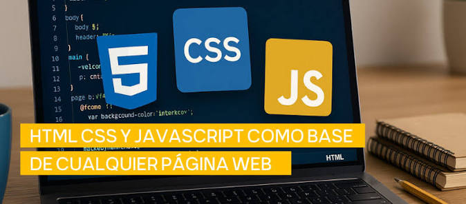
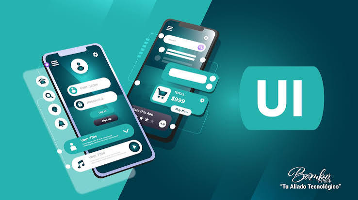
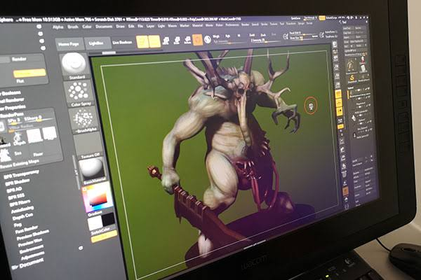
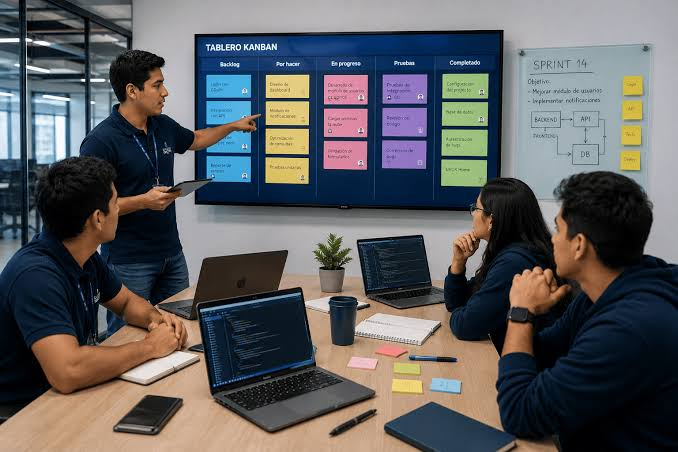

DESARROLLO DE SOFTWARE
Crea. Programa. Innova.
La especialización de Desarrollo de Software te permite conocer el mundo de la programación, la tecnología y la creación de soluciones digitales.

¿Qué es Desarrollo de Software?
¿Qué es?
El Desarrollo de Software es el área relacionada con la creación, diseño, programación y mantenimiento de aplicaciones, páginas web y diferentes soluciones tecnológicas.
El desarrollo de software no consiste únicamente en escribir código. También implica comprender las necesidades de los usuarios, planificar una solución, diseñar su funcionamiento, comprobar que cumpla su propósito y realizar mejoras cuando sea necesario. Cada proyecto puede requerir diferentes herramientas, lenguajes y métodos de trabajo dependiendo del problema que se desea resolver.
Las soluciones digitales están presentes en muchas actividades cotidianas. Por ejemplo, una aplicación puede facilitar la comunicación, un sistema informático puede organizar los registros de una institución y una página web puede ofrecer información a estudiantes y docentes. En todos estos casos, el software permite realizar tareas de una manera organizada y adaptada a determinadas necesidades.
Para desarrollar un programa es importante combinar el pensamiento lógico con la creatividad. El programador debe analizar qué necesita resolver, dividir el problema en partes pequeñas y establecer una secuencia de instrucciones que la computadora pueda ejecutar. Después, debe comprobar los resultados y corregir los errores que encuentre.
¿Qué aprenderás?
La formación en Desarrollo de Software puede abarcar diferentes áreas de la informática. Estas permiten comprender cómo se construyen los programas, cómo se organiza la información y cómo se diseñan las herramientas digitales que utilizamos diariamente. Los conocimientos se pueden desarrollar progresivamente mediante explicaciones, ejercicios, prácticas y proyectos.
También es importante aprender a relacionar los distintos componentes de una solución tecnológica. Una aplicación puede necesitar una interfaz para que el usuario interactúe con ella, instrucciones para realizar operaciones y un sistema que almacene información cuando corresponda. La forma de combinar estos elementos depende de las funciones que deba cumplir el proyecto.

Conocerás cómo crear páginas y sitios web utilizando tecnologías como HTML, CSS y JavaScript.
Aprenderás conceptos para crear interfaces claras y fáciles de utilizar.Tres tecnologías fundamentales para el desarrollo web
HTML: permite organizar el contenido de una página web mediante elementos como títulos, párrafos, imágenes, enlaces, listas y formularios.
CSS: se utiliza para definir la presentación visual de una página, incluyendo colores, tipografías, espacios, distribuciones, bordes y adaptación a distintos tamaños de pantalla.
JavaScript: permite incorporar comportamientos interactivos, responder a las acciones del usuario, validar formularios y actualizar elementos de una página.
Estas tecnologías cumplen funciones diferentes y pueden combinarse para construir experiencias web organizadas, atractivas e interactivas.
¿Qué habilidades necesitas?
Esta especialización puede ser para ti si:
No necesitas dominar todos estos conocimientos antes de comenzar. La curiosidad, la disposición para practicar y el interés por aprender son buenos puntos de partida. Algunas actividades pueden resultar difíciles al principio, pero dividir los problemas en pasos pequeños permite comprenderlos y trabajar en ellos con mayor orden.
También es útil desarrollar la capacidad de buscar información, comprender instrucciones, explicar tus ideas y pedir ayuda cuando sea necesario. El desarrollo de software combina conocimientos técnicos con habilidades de comunicación, organización y colaboración.
- ✓ Te gusta la tecnología.
- ✓ Disfrutas resolver problemas.
- ✓ Te interesan las computadoras.
- ✓ Te gustan los juegos de lógica.
- ✓ Quieres crear aplicaciones o páginas web.
- ✓ Tienes curiosidad por saber cómo funcionan las aplicaciones.
- ✓ Te gusta aprender cosas nuevas.
- ✓ Tienes paciencia para encontrar errores y corregirlos.
¿Cómo saber si esta especialización es para mí?
¿Cuál de estas actividades te interesan más?
Explorar tus intereses puede ayudarte a reconocer qué tipo de actividades disfrutas. Por ejemplo, crear una página web combina organización y diseño; resolver un problema de lógica requiere analizar información; y pensar en un videojuego invita a imaginar reglas, personajes, acciones y formas de interacción.
No es necesario que todas estas actividades te gusten por igual. Puedes comenzar por aquella que más curiosidad te produzca y probar diferentes ejercicios para descubrir qué aspectos de la tecnología te interesan más.
Crear una página web
Resolver problemas de lógica

Pensar cómo se crea un videojuego
¿Qué puedes llegar a crear?
Los proyectos de software pueden tener objetivos muy distintos: informar, facilitar tareas, organizar datos, entretener o ayudar a resolver problemas. Su diseño depende de las personas que los utilizarán, los recursos disponibles y las funciones que se necesiten.
Antes de comenzar un proyecto, es importante definir qué problema se quiere resolver, quién utilizará la solución y qué características debería tener. Esta planificación permite establecer prioridades y comprobar posteriormente si el resultado cumple su propósito.
Páginas web
Sitios web para empresas, instituciones o proyectos personales.
Una página web puede presentar información, mostrar imágenes, incluir formularios de contacto y ofrecer enlaces a otros contenidos. Un sitio web reúne distintas páginas que se relacionan entre sí y que suelen compartir una misma temática o propósito.
Aplicaciones
Aplicaciones para dispositivos móviles.
Las aplicaciones pueden ayudar a organizar actividades, comunicarse, estudiar, realizar cálculos o consultar información. Sus funciones dependen de las necesidades para las que fueron diseñadas y de las características de los dispositivos donde se utilizan.
Programas
Software para resolver diferentes necesidades.
Un programa está formado por instrucciones que permiten realizar determinadas tareas. Puede recibir datos, procesarlos siguiendo reglas definidas y producir resultados que ayuden a completar una actividad.
Sistemas de Información
Sistemas que permiten almacenar y administrar información.
Estos sistemas pueden combinar personas, procesos, datos y herramientas tecnológicas para registrar operaciones y facilitar la consulta de información. Se utilizan, por ejemplo, para gestionar inventarios, matrículas, préstamos o registros administrativos.
Videojuegos
Proyectos interactivos utilizando programación y diseño.
Un videojuego puede combinar programación, imágenes, sonidos, reglas y mecanismos de interacción. Su desarrollo requiere organizar cómo responde el juego a las acciones del usuario y comprobar que sus diferentes elementos funcionen de manera coherente.
Soluciones tecnológicas
Herramientas digitales para resolver problemas.
Una solución tecnológica debe responder a una necesidad concreta. Por eso, antes de elegir herramientas o escribir código, es necesario entender el problema y valorar qué funciones serían útiles para las personas que utilizarán el resultado.
👨💻 Posibles profesiones
Al estudiar Desarrollo de Software puedes conocer diferentes áreas profesionales relacionadas con la tecnología.
Algunos de los caminos que podrías seguir son:
| Profesión | ¿Qué hace? |
|---|---|
| 🧑💻 Desarrollador web | Crea y mantiene sitios web. |
| 📱 Desarrollador de aplicaciones | Desarrolla aplicaciones para diferentes dispositivos. |
| 🖥️ Programador | Crea programas utilizando código. |
| 🗄️ Especialista en bases de datos | Organiza y administra información. |
| 🎮 Desarrollador de videojuegos | Crea experiencias y videojuegos interactivos. |
| 🎨 Diseñador UI/UX | Diseña interfaces y experiencias digitales. |
¿Cómo se relacionan estas profesiones?
Las áreas profesionales del software pueden complementarse. Por ejemplo, un proyecto web puede requerir una persona que desarrolle la interfaz, otra que trabaje en la lógica del sistema y tareas relacionadas con el almacenamiento de datos y las pruebas. En proyectos pequeños, una misma persona puede encargarse de varias de estas responsabilidades.
Las funciones concretas varían según el proyecto, la experiencia, la formación y las necesidades de cada organización. Conocer estas opciones sirve como punto de partida para investigar carreras técnicas y universitarias relacionadas con la informática.
Habilidades que desarrollarás
Durante el aprendizaje de la informática se combinan conocimientos técnicos con habilidades personales. Los primeros ayudan a construir y comprobar soluciones; las segundas permiten organizar el trabajo, compartir ideas y colaborar con otras personas. Ambas clases de habilidades pueden fortalecerse mediante la práctica y los proyectos.
Habilidades técnicas
Las habilidades técnicas están relacionadas con las herramientas y los procedimientos utilizados para crear software. Incluyen comprender instrucciones, escribir y revisar código, organizar datos, estructurar páginas web y probar las funciones de un programa.
- Programación
- Desarrollo web
- Bases de datos
- Lógica computacional
- Diseños de interfaces
- Resolución de problemas
Habilidades personales
Las habilidades personales ayudan a afrontar los retos de un proyecto. La paciencia permite revisar errores con calma, la organización facilita dividir el trabajo en tareas y la comunicación ayuda a explicar decisiones, compartir avances y comprender las necesidades de otros.
- Creatividad
- Trabajo en equipo
- Pensamiento crítico
- Paciencia
- Organización
- Comunicación
- Aprendizaje continuo
¿Cómo es estudiar Desarrollo de Software?
¿Qué voy a hacer durante la especialización?
El desarrollo de un proyecto suele comenzar con la comprensión de una necesidad y continúa con la planificación, el diseño, la programación y las pruebas. Sin embargo, estas actividades no siempre ocurren una sola vez ni en un orden rígido: cuando una prueba descubre un problema o cambia un requisito, puede ser necesario regresar a una etapa anterior y realizar ajustes.
Este proceso permite revisar el avance, identificar dificultades y mejorar gradualmente el resultado. La documentación de las decisiones y la organización de las tareas también ayudan a comprender cómo se construyó una solución y qué aspectos podrían modificarse después.
Investigar 🔎
Comprender un problema o necesidad.
Planificar 📝
Pensar cómo solucionarlo.
Diseñar 🎨
Crear la estructura y apariencia de la solución.
Programar 💻
Convertir la solución en código.
Probar 🧪
Buscar errores y comprobar que funcione.
Mejorar 🚀
Corregir problemas y agregar nuevas funciones.
🌐 ¿Dónde se puede aplicar?
El Desarrollo de Software está presente en diferentes áreas de nuestra vida y permite crear soluciones para distintas necesidades.
Educación
Las herramientas digitales pueden ayudar a organizar recursos educativos, consultar materiales, realizar actividades y facilitar la comunicación entre estudiantes y docentes. Su utilidad depende de las necesidades del centro educativo y de la forma en que se implementen.
Salud
Los sistemas informáticos pueden utilizarse para organizar citas, administrar registros y facilitar determinadas tareas de gestión. Debido a la sensibilidad de los datos médicos, estas herramientas deben considerar la privacidad y la protección de la información.
Empresas y negocios
Las empresas utilizan programas para gestionar inventarios, registrar operaciones, coordinar tareas y consultar datos. Una solución bien planificada puede ayudar a organizar procesos y reducir tareas repetitivas.
Comunicación y entretenimiento
Las aplicaciones de mensajería, las plataformas digitales y los videojuegos son ejemplos de productos que requieren software para procesar acciones, mostrar contenido y permitir diferentes formas de interacción.
Servicios públicos
Las instituciones pueden emplear herramientas informáticas para publicar información, gestionar solicitudes y facilitar determinados trámites. Es importante que estos servicios sean comprensibles, accesibles y adecuados para las personas que los utilizan.
Investigación científica
Los programas informáticos permiten procesar datos, representar resultados, realizar cálculos y apoyar distintas actividades de investigación. Las herramientas elegidas dependen del tipo de información y de los objetivos del estudio.
Calidad y responsabilidad en el desarrollo de software
Desarrollar software implica mucho más que conseguir que un programa funcione. También es necesario pensar en su claridad, confiabilidad, facilidad de uso y capacidad para responder a las necesidades para las que fue creado. Estos aspectos contribuyen a que la solución sea útil para sus usuarios.
Seguridad y privacidad
La seguridad busca reducir los riesgos de accesos no autorizados, alteraciones y otros problemas que puedan afectar un sistema. La privacidad se relaciona con el tratamiento responsable de los datos personales. Ambos aspectos deben considerarse desde el diseño y durante el mantenimiento de las aplicaciones.
Usabilidad
Una herramienta digital debe permitir que las personas comprendan sus funciones y realicen las tareas previstas. Los textos claros, las instrucciones comprensibles y una distribución coherente de los elementos pueden facilitar su utilización.
Accesibilidad
Una página accesible busca reducir las barreras que impiden a determinadas personas consultar contenido o utilizar funciones. Por eso es importante cuidar la estructura de los títulos, las descripciones de las imágenes, la legibilidad y la navegación mediante teclado.
Mantenimiento y mejora continua
Después de publicar un programa, pueden aparecer errores, cambiar las necesidades de los usuarios o surgir nuevas funciones que resulte conveniente incorporar. El mantenimiento permite corregir problemas, actualizar componentes y adaptar el sistema a nuevas condiciones.
FORMACIÓN ACADÉMICA
¿Qué materias estudiarás?
Durante la especialización de Desarrollo de Software estudiarás diferentes asignaturas que te ayudarán a desarrollar conocimientos tecnológicos, científicos y personales.
Las asignaturas pueden contribuir al desarrollo de distintas capacidades. Algunas se relacionan directamente con la informática y la programación, mientras que otras ayudan a fortalecer el razonamiento matemático, la comunicación, la comprensión científica y la formación personal.
Estos conocimientos pueden complementarse durante la elaboración de proyectos. Por ejemplo, una actividad de programación puede requerir analizar un problema con lógica, comprender instrucciones, organizar la información y explicar cómo funciona la solución. La integración de diferentes aprendizajes ayuda a abordar los proyectos desde varias perspectivas.
Los nombres, la organización y la profundidad de las materias deben revisarse con el plan de estudios vigente de la institución. La descripción de esta página tiene una finalidad informativa y no sustituye la información académica oficial del colegio.
Tecnología y programación
Materias enfocadas en la programación, la tecnología y el desarrollo del pensamiento lógico.
Programación Estructurada
Aprenderás los fundamentos de la programación, los algoritmos y las estructuras necesarias para desarrollar soluciones informáticas.
Fundamentos de las TIC
Conocerás conceptos fundamentales sobre las tecnologías de la información y la comunicación y su aplicación.
Base de Datos
Aprenderás a organizar, almacenar y gestionar información de manera estructurada.
Aplicaciones de Escritorio
Conocerás los fundamentos para desarrollar aplicaciones que funcionan directamente en un computador.
Pensamiento Computacional
Desarrollarás habilidades para analizar problemas, organizar ideas y encontrar soluciones mediante la lógica.
Ciencias y razonamiento
Asignaturas que fortalecen el razonamiento, el análisis y la comprensión científica.
Matemática
Fortalecerás el razonamiento lógico y la resolución de problemas mediante conceptos matemáticos.
Física
Estudiarás fenómenos físicos y desarrollarás habilidades para analizar diferentes situaciones mediante el razonamiento científico.
Química
Conocerás conceptos relacionados con la materia, sus propiedades y diferentes procesos químicos.
Biología
Estudiarás los seres vivos y diferentes procesos relacionados con la vida y el funcionamiento de los organismos.
Módulo Práctico Experimental
Aplicarás conocimientos mediante actividades prácticas y experimentales.
Formación general
Materias que complementan tu formación académica, personal, social y ciudadana.
Inglés
Desarrollarás habilidades para comprender y comunicarte en el idioma inglés.
Lengua y Literatura
Fortalecerás la comprensión lectora, la comunicación y la expresión escrita.
Historia
Conocerás acontecimientos y procesos históricos que ayudan a comprender la sociedad actual.
Filosofía
Desarrollarás el pensamiento crítico y la capacidad de reflexionar sobre diferentes temas.
Emprendimiento
Desarrollarás conocimientos relacionados con la creación de ideas, proyectos e iniciativas.
Educación Física
Promoverás el desarrollo físico, la actividad corporal y hábitos saludables.
Educación para la Ciudadanía
Fortalecerás conocimientos relacionados con la convivencia, los derechos y la participación ciudadana.
Cívica y Acompañamiento Integral en el Aula
Aborda aspectos relacionados con la convivencia, la formación ciudadana y el acompañamiento dentro del entorno educativo.
Ética, Legislación y Ciudadanía Digital
Conocerás principios de ética y aspectos relacionados con el uso responsable de la tecnología y la ciudadanía digital.
ECA
Complementarás tu formación mediante actividades relacionadas con la expresión y la cultura.
⚖️ Ventajas y desafíos
Estudiar Desarrollo de Software ofrece diferentes oportunidades, pero también implica algunos retos.
Estudiar esta área permite conocer cómo se construyen las herramientas digitales que utilizamos, pero también exige disposición para analizar, probar y corregir. No todas las soluciones funcionan a la primera y es normal tener que revisar instrucciones o cambiar una parte del programa para obtener el resultado esperado.
Otro aspecto importante es el uso responsable de la tecnología. Un programa debe evaluarse no solo por las funciones que ofrece, sino también por la forma en que utiliza los datos, la seguridad de la información y la facilidad con la que las personas pueden comprenderlo y utilizarlo. La seguridad del software debe considerarse durante el desarrollo, no únicamente al finalizarlo.
✅ Ventajas
💡
Desarrolla la creatividad
Permite transformar ideas en proyectos y soluciones digitales.
🚀
Permite crear proyectos propios
Puedes desarrollar páginas web, aplicaciones y otros proyectos.
🧩
Mejora la resolución de problemas
La programación ayuda a analizar problemas y encontrar soluciones.
🌎
Se aplica en diferentes áreas
El software puede utilizarse en educación, salud, empresas, entretenimiento y más.
⚠️ Desafíos
📚
Requiere práctica constante
Para mejorar en programación es necesario practicar y aprender continuamente.
🧠
Algunos problemas pueden ser difíciles
Resolver errores y encontrar soluciones puede requerir tiempo y análisis.
🔎
Necesitas paciencia
Los errores forman parte del proceso y tendrás que aprender a solucionarlos.
🔄
La tecnología cambia constantemente
Es importante mantenerse actualizado y continuar aprendiendo.
🧠 ¿Te identificas?
Desarrollo de Software puede ser una buena opción para ti si te interesan la tecnología, la creatividad y la resolución de problemas.
Cada persona se acerca a la tecnología desde intereses diferentes. Algunas disfrutan diseñar interfaces, otras prefieren resolver problemas lógicos y otras sienten curiosidad por la organización de los datos. Conocer estas diferencias puede ayudarte a explorar distintas áreas del desarrollo de software.
No necesitas tener todas las habilidades desde el principio. Durante el aprendizaje puedes descubrir qué actividades te resultan más interesantes, reconocer los aspectos que necesitan más práctica y establecer metas para avanzar de forma progresiva.
💻
Te interesa la tecnología
Te da curiosidad conocer cómo funcionan las computadoras, aplicaciones y páginas web.
🧩
Te gustan los retos
Disfrutas buscar soluciones cuando encuentras un problema.
🔎
Eres curioso
Te gusta investigar y descubrir cómo funcionan las cosas.
🎨
Te gusta crear
Te interesa transformar tus ideas en proyectos y soluciones digitales.
🧠
Te gusta la lógica
Disfrutas los acertijos, juegos de lógica y problemas que requieren pensar.
🚀
Quieres aprender
Tienes interés en aprender nuevas herramientas y tecnologías.
💡 ¿Te identificaste con varias?
Si varias de estas características te representan, Desarrollo de Software podría ser una especialización que te interese explorar.
Descubrir si es para mí🚀 Ruta de aprendizaje
Conoce algunas de las etapas que puedes recorrer durante tu formación en Desarrollo de Software.
Esta ruta representa una manera general de comprender el aprendizaje del desarrollo de software; no es una secuencia obligatoria ni un calendario oficial de tu colegio. Cada programa de formación puede organizar los contenidos de manera diferente, según sus objetivos y actividades.
Las distintas etapas también se relacionan entre sí. Al crear una aplicación, por ejemplo, puede ser necesario volver a revisar los fundamentos, modificar una parte del código o replantear el diseño después de realizar pruebas. La práctica permite relacionar conceptos y comprender progresivamente cómo se construye una solución completa.
1
🌱
Fundamentos
Conocer los conceptos básicos de la informática, el software y la programación.
2
🧠
Lógica de programación
Aprender a analizar problemas y plantear soluciones paso a paso.
3
💻
Programación
Aprender a utilizar lenguajes de programación para crear diferentes soluciones.
4
🌐
Desarrollo web
Crear páginas y aplicaciones web utilizando tecnologías como HTML, CSS y JavaScript.
5
🗄️
Bases de datos
Aprender a almacenar, organizar y consultar información de manera estructurada.
6
🚀
Proyecto
Aplicar los conocimientos adquiridos para desarrollar un proyecto de software.
❓ Preguntas frecuentes
Conoce las respuestas a algunas de las preguntas más comunes sobre la especialización de Desarrollo de Software.
¿Necesito saber programar antes de estudiar esta especialización?
No. Puedes comenzar aprendiendo desde los conceptos básicos y avanzar poco a poco mientras desarrollas tus habilidades.
¿Qué lenguajes de programación puedo aprender?
Dependiendo de la formación, puedes conocer lenguajes y tecnologías como JavaScript, Python, Java u otros.
¿Tengo que ser bueno en matemáticas?
Las matemáticas pueden ser útiles, pero no necesitas ser excelente en ellas. También son importantes la lógica, la creatividad y la capacidad para resolver problemas.
¿Qué puedo crear si estudio Desarrollo de Software?
Puedes aprender a crear páginas web, aplicaciones, programas, sistemas, videojuegos y diferentes soluciones digitales.
¿Es necesario tener una computadora potente?
Para comenzar a aprender programación y desarrollo web, normalmente es suficiente una computadora que pueda ejecutar herramientas básicas de programación.
¿Qué puedo hacer después de estudiar esta especialización?
Puedes continuar tus estudios en carreras relacionadas con tecnología, programación, sistemas, desarrollo web y otras áreas de informática.
¿Qué diferencia existe entre una página web y una aplicación web?
Una página web suele presentar contenido específico, como información, imágenes o noticias. Una aplicación web, además de presentar contenido, permite realizar tareas e interactuar con sus funciones, por ejemplo registrar información, completar formularios o consultar resultados personalizados. La diferencia depende de las funciones que tenga cada producto.
¿Por qué es importante probar un programa?
Las pruebas permiten comprobar si el programa cumple los requisitos esperados y descubrir comportamientos incorrectos. También ayudan a revisar qué sucede con diferentes datos y situaciones de uso. Después de encontrar un error, el desarrollador puede corregirlo y volver a probar la solución.
¿Qué significa que una página web sea accesible?
Significa diseñarla y construirla para que la mayor cantidad posible de personas pueda utilizarla, incluidas personas con discapacidad. Para ello conviene utilizar títulos claros, textos comprensibles, descripciones para las imágenes cuando sean necesarias y controles que se puedan manejar con diferentes métodos de navegación.
¿Por qué es importante proteger la información?
Las aplicaciones pueden manejar datos personales o información de una organización. Por eso es importante limitar el acceso a los datos según las necesidades, evitar exponer información innecesariamente y considerar medidas de seguridad durante el desarrollo y el mantenimiento del sistema.
🚀 TU FUTURO COMIENZA HOY
¿Tu futuro está en la tecnología?
Descubre si Desarrollo de Software puede ser una especialización adecuada para ti.
Responde algunas preguntas sobre tus intereses, habilidades y gustos para conocer qué tan relacionado está tu perfil con el mundo de la tecnología.
Realizar test de orientación →
DESCUBRE MÁS
Explora otras especializaciones
¿Todavía estás explorando tus opciones? Conoce las demás especializaciones de nuestra institución y descubre cuál se adapta mejor a tus intereses.
Comparar las especializaciones puede ayudarte a conocer sus enfoques, las asignaturas que incluyen y el tipo de actividades que proponen. Es útil pensar tanto en los temas que te interesan actualmente como en los conocimientos que te gustaría desarrollar durante tu formación.
La elección no debería basarse únicamente en el nombre de una especialización. Conviene revisar su contenido académico, conversar con docentes y estudiantes, y conocer las opciones educativas que podrían estar relacionadas con ella. Así podrás tomar una decisión más informada según tus intereses y objetivos.
Desarrollo de Software
Aprende programación, desarrollo web, bases de datos y creación de proyectos tecnológicos.
✓ Estás aquíGestión Financiera
Conoce el mundo de las finanzas, la administración, los negocios y la gestión de recursos.
Conocer especialización →Ciencias
Explora las ciencias, la investigación y el análisis de fenómenos naturales y científicos.
Conocer especialización →